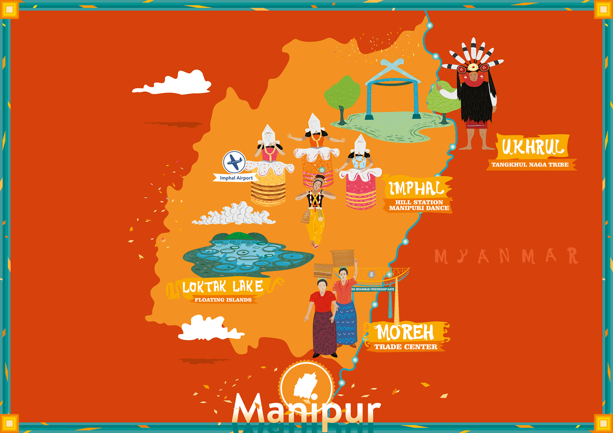

"A pretty place, more beautiful than many of the show-places of the world..." wrote Lady Ethel St. Clair Grimwood in her 1891 memoir My Three Years in Manipur."
Manipur is a hidden gem in North East India, known for its serene landscapes, vibrant culture, and rich biodiversity. Nestled in the Eastern Himalayas, the state offers a perfect blend of natural beauty and cultural depth. Its lush green valleys, misty hills, and tranquil lakes make it an ideal destination for eco-travelers and nature lovers.
One of Manipur’s most iconic attractions is Loktak Lake, India’s only floating lake, home to unique circular phumdis (floating biomass) and the endangered Sangai deer, found only in Keibul Lamjao National Park—the world’s only floating wildlife sanctuary. The capital city, Imphal, is rich in history and tradition, from the ancient Kangla Fort to vibrant local markets and classical Manipuri dance.
Manipur is also known for its warm hospitality, indigenous crafts, and diverse tribal communities. For adventure seekers, the state offers trekking, caving, and birdwatching opportunities amid untouched landscapes.
With its peaceful environment and commitment to preserving tradition and nature, Manipur is an ideal destination for responsible tourism—where every visit supports local communities and fosters cultural respect.
Travel Map

Travel Plan
Cultural & Heritage
Kangla Fort (Imphal) – Historic site of Manipur’s heritage.
Ima Keithel (Mother’s Market) – Asia’s largest women-run market.
Adventure & Nature
Loktak Lake – Floating phumdis and the only floating national park (Keibul Lamjao).
Dzukou Valley Trek – A stunning valley with seasonal flowers.